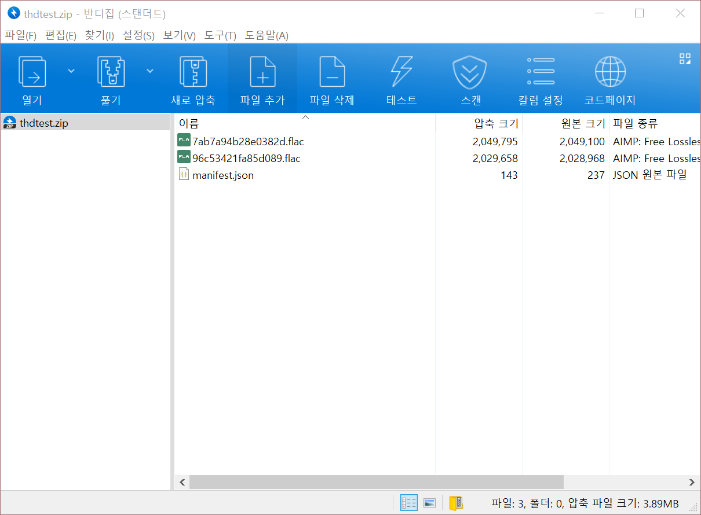

manifest.json을 제작합니다.
{
"label": "(테스트 이름)",
"entries": [
{
"label": "원본",
"filename": "7ab7a94b28e0382d.flac"
},
{
"label": "Limiter (-1db)",
"filename": "96c53421fa85d089.flac"
}
]
}
entries의 각 항목엔 각 비교 대상 파일명을 filename에,
각 파일의 설명을 label에 써두시면 됩니다. 전체 테스트 설명은 2번째 줄
label에 적으시면 됩니다.
.zip 확장자로 압축합니다. manifest.json은
zip 파일 루트에 있어야 합니다. ( = 어떤 폴더 안에도 있으면 안됩니다. zip 열면 바로 나오게)

.html 파일이 다운로드될겁니다. 그게 완성된 블라인드 테스트입니다.